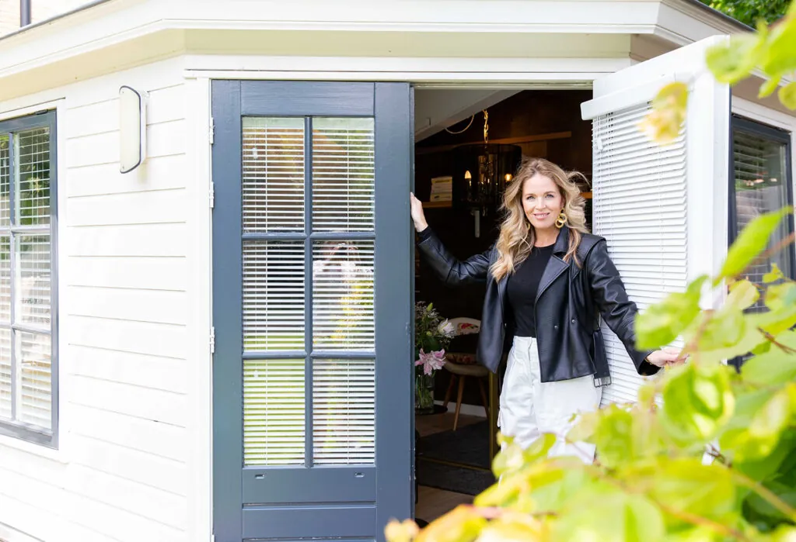

Werkgebied
Coaching & relatietherapie in Noordwijk en omgeving
De praktijk staat in Noordwijk (Offemweg 47). Veel cliënten — vooral voor relatietherapie — komen uit de omliggende gemeenten. Ook online sessies zijn mogelijk voor heel Zuid-Holland.
Vanuit welke plaatsen
Goed bereikbaar vanuit de hele regio
Rustig gelegen in Noordwijk, op korte reisafstand van de kust, de Bollenstreek en de Leidse regio.
Kuststreek
Katwijk, Rijnsburg, Noordwijkerhout
± 10-15 minBollenstreek
Voorhout, Sassenheim, Hillegom, Lisse
± 12-20 minLeidse regio
Oegstgeest, Leiden
± 20-25 minVerder in Zuid-Holland
Wassenaar, Den Haag & omgeving
online mogelijkVanuit jouw plaats naar de praktijk
Cliënten uit de hele regio vinden hun weg naar de praktijk in Noordwijk:
- Noordwijk & Noordwijkerhout — lokale expertise in de kuststreek
- Katwijk & Rijnsburg — dichtbij en goed bereikbaar (± 10 minuten)
- Leiden & Leiderdorp — flexibele afspraakmogelijkheden
- Oegstgeest — perfect gelegen tussen kust en stad
- Voorhout, Sassenheim, Lisse & Hillegom — het hart van de Bollenstreek
- Wassenaar, Den Haag & Amsterdam — online coaching beschikbaar

De praktijk
Offemweg 47, Noordwijk
Een rustige, warme praktijkruimte in het hart van de Bollenstreek — bewust weg van stadsdrukte, met voldoende parkeergelegenheid. Kom je van verder of past reizen niet? Dan bieden online sessies dezelfde persoonlijke begeleiding.
Plan je kennismaking